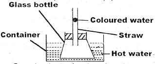
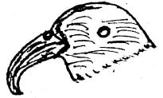
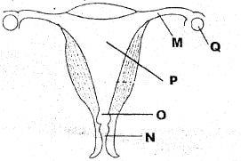

1. Which part of the alimentary canal is not matched with its function?
2. The blood vessel that carries scarlet blood away from the heart is
3. Which one of the following is the final stage of HIV and AIDS infection?
4. The following are common communicable diseases except
5. A child suffering from anaemia should be given foods rich in
6. Wearing of gumboots while walking in rice fields will prevent one from contracting _____
7. Planets appear bright because they _____
8. Name the phase of the moon shown in the diagram below.
9. Which vaccine is administered on the thigh of a baby?
10. Which one is a supplement feed given to animals?
11. Which one has a pair of traditional methods of preserving food?
12. Which one is an emotional change in adolescents?
13. Which one of the following plant is green and non flowering?
14. Which crop pest below is not matched with its effect?
15. Which one of the following is a correct food chain?
16. The diagram below shows an activity carried out by standard five pupils 
From the observation the coloured water rose as a result of
17. When investigating pressure in liquids which one of the following is not required?
18. Sinking and floating does not depend on
19. Which pair of forms of energy can travel through a vacuum?
20. This bird is likely to feed on?

21. The component that makes up 0.97% of air is used in?
22. Which substance below will not change state when cooled?
23. Which of the following type of soil is obtained from the river bank?
24. The following are rotational methods of grazing except?
25. lt is true to say both a chicken and a toad _________
26. Which one of the following explains the importance of fibre in our diet?
27. Which list below has foods that belong to the same food group?
28. Which one does not describe an industrial use of water?
29. During a thunderstorm you should?
30. Which practice below does not reduce a force that opposes motion?
31. In which of the following materials will magnetism not pass through?
32. The diagram below shows the female reproductive system 
Which two parts are involved during ovulation?
33. Which of the following component is found in all the components of the environment?
34. A natural way of lighting the house is by fusing _____
35. Spraying of farm animals will control?
36. Which one has crops that belong to the same group?
37. Which methods of separating mixtures are mainly used to separate solid mixtures only?
38. Shallow channels on the farm eventually lead to formation of?
39. Which one of the following belongs to the same group as a vulture in a feeding relationship?
40. Which one of the following is the largest planet?
41. Standard 5 pupils saw a wind vane pointing east. In which direction was a wind sock likely to point?
42. Coloured water is used in the making of a liquid thermometer because?
43. In which of the following lever is the effort distance greater than the load distance?
44. Which one of the following is a flightless bird?
45. Which instrument works on the fact that light travels in a straight line?
46. Which one of the following cannot pollute water?
47. The following are useful fungal plants except?
48. Which one of the following is not a harmful substance produced when tobacco burns?
49. The following are air passages. Which one is not?
50. Which list has only narcotic drugs?